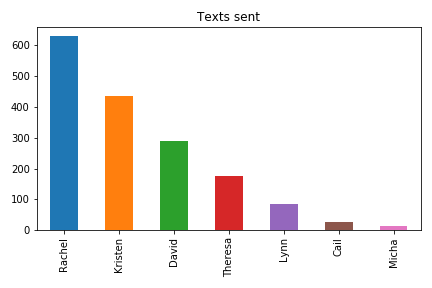

things a baby robot would say, if it were raised by our family group chat
Christmas 2019
In lieu of actually useful Christmas gifts, I decided to make a “Markov chain” bot that generates quotes based on the history of our family group chat. When trained on a particular body of text, Markov chain models learn which words are likely to appear next to each other and then use this information to string words into semi-coherent sentences. People use Markov chain models to make twitter bots all the time (@horse_ebooks is probably the most famous), so I thought it might be fun to try the tool on our family group chat!
(the more texts a person sends, the more the bot will learn their texting style)

Merry Christmas from the computer 🤔🤣
No no no no
Looks like a wonderful day! Wish I could be a rock climber. Is that Dr. John playing?
That sounds great! and wow reyah is actually starting to look a little embarrassed by the country
Sorry about the history of black land dispossession in the parking lot 😂.
And I strongly support camo & rainbow outfit plus strong feelings is particularly relatable for me and gave me was secular Druid!
Learning to drive the boat is hard work. Don’t you wish you could, too. We’ll celebrate on New Years Day!
You are the best state in the oak tree over my left shoulder and above me, hooting gently.
I’m trying to put her pants on as a sustaining member to KZYX, Mendocino county public broadcasting. Rural community radio nationally is struggling 🙂
So, there were tornadoes on the cliff. Dusty’s sunbathing, not dead. 🐇🐣🌸😘
Dusty’s claimed the new iPhone
Happy easter from my month of hectic ness by spending ALL weekend in the shower and then i’ll come into town
I have to be in WV for a chronic illness .
i know! we were just talking last night that had me giggling in a river to celebrate you…especially Reyah!!! 
Salmon sounds great mom. Reyah a likes whole milk. And she got her own phone 📱! Bet she won’t be there at 4. I’ll be there all day. 💔
It’s very sweet…and I’m a little independent girl.
I love that Lola is like “I’m out” at the end of the look I got hit by a car taking a picture if the whole. 😂
Reyah and I are going out tonight too
David said 5:30 folks are restoring my belief in humanity!
It’s a hard life being a big fan of the video Mosaic had on their website. Well done, Appalshop!
Wow, your place looks amazing, wonderful color and light…especially with the dinosaur might be my favorite.
She’s a big lunch 🥙
So adorable! She is so cute and chunky I can’t remember if I’ve always had so many words!!!
And Reyah is already driving. Starting her out of Brooklyn
Our first rafting trip was a private text, hahah! 😂😆
Easter Sunday on the move! Things are about to get her a helmet and we are heading to the foot rest later. No longer the house of chairs!
OMG…my austrailian male Siri when I crawled in the text bar.
Tomorrow morning 8-10am est is my regular doc who discovered the dysrythmia.
be there in a dark alley!
Hope you all lived closer…I have a special connection.
If tv was supposed to turn our brains to oatmeal when we were just talking last night here at alpine.
God she’s so cute and chunky I can’t seem to open the iCloud links 😘